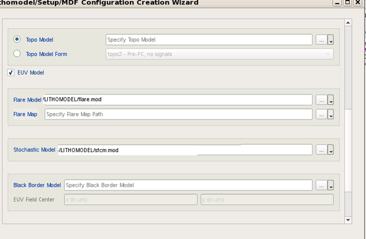
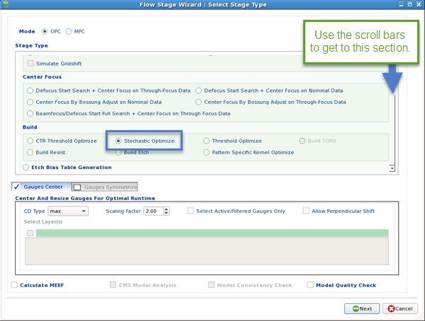
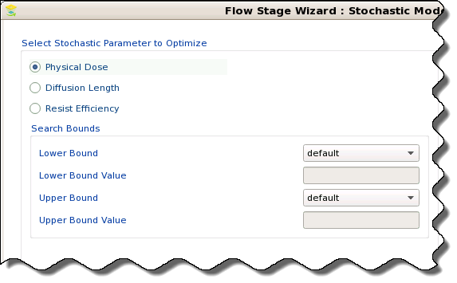

A correctly calibrated stochastic model
increases the predictive accuracy of the model when used with a
CM1 and EUV optical model.
Prerequisites
The modified
gauge file from the task “Modifying a Gauge File For Stochastic Models”
A litho model
containing a stochastic model, or a set of files (optical, CM1, stochastic,
flare, and optional DDM)
The corresponding
gauge file and design file
Procedure
- If the
litho model is not loaded in Calibre nmModelflow, load it (using
the Import Litho Model wizard) or create it (using the Lithomodel/Setup/MDF Configuration
Creation Wizard).
Note: If you use the wizard to create a litho model,
you add the stochastic model on the Lithomodel Components page after
selecting the EUV Mode checkbox.

- If the
gauges file is not already in the Calibre nmModelflow database, load
it using the Load button in the Gauges tab,
or the Add using Wizard button in the Database
Browser.
- Create a stage using the Flow Stage Wizard (in
the Database Browser, Stage category, click the Add Calibration
Stage button), and select Build > Stochastic Optimize.

- Choose
the stochastic model parameter to optimize, set the lower and upper
bounds if needed, and click Next.

- On the
final page, edit the command script and description if needed. Some
useful commands include:
mdf
objective {ler | lwr} — Changes the objective of the stochastic
calibration to either line edge roughness (ler) or line width roughness
(lwr). Using the lwr objective requires a LWR measurement column
to be present in the input gauge data file.
mdf stochastic
failure_rate -N iterations -seed value
[-tol_percent value |
-tol_nm value]
[-min_cd value]
— Adds a Stcm_Failure column to the result gauge, reporting the
failure to print rate of a gauge’s CD as a fractional value between
0 and 1. The tolerance values add additional failure criteria.
Click Finish to create the stage.
- Create
a Calibration Job that includes the litho model, gauge file, and stochastic
model optimization stage, using the Calibration Setup Wizard (invoked
using the Calibration Job category, Add Using Wizard button).
- Switch
to the Calibration Job Manager tab and run
the job.
Results
The calibration job runs and optimizes for the stochastic model
parameter you specified. The following columns are added to the
output:
Stcm1,
Stcm2 — Stochastic modeling bandwidth values. Stcm1 corresponds
to the left / lower edge and Stcm2 corresponds to the right / upper
edge location.
Stcm_failure
— Failure percentage; this is the number of trials where the calculated
CD does not meet the specified criteria. Only added if you have
the “mdf stochastic failure_rate” command in the Stage script.
Stcm_CD — The
average CD of the stochastic measurement.
Stcm_LER1 and
Stcm_LER2 — Stochastic line edge roughness values of two edges of
a gauge’s features as calculated during random trials.
Stcm_LWR —
Stochastic line width roughness of a gauge’s CD.
You can view the results using the Calibration Job Report (in
the Calibration Job Manager tab, click the
row containing the finished job, then click View).
If the results are satisfactory, you can perform one or more
of the following actions using the buttons on the lower left corner
of the Calibration Job Report:
Add
Output Lithomodel to DB — Use the calibrated model for
future simulation runs.
Export
Model — Saves the model to a directory for use directly
in Calibre OPCverify or Calibre nmOPC runs.
Accept —
Switch the active gauges and litho model to the results of this
calibration run. You may need to use the Column Manager (right click
on any gauge column header) to make the stochastic columns visible.